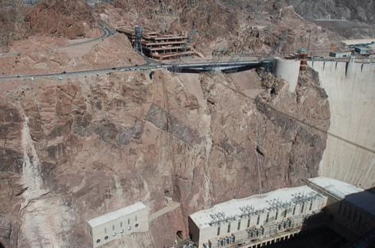

Overview
The geology of Nevada began to form at the western edge of North America, on the Geological Time Scale (GTS). During the Paleozoic and Mesozoic (epochs of reptiles and conifers), the continent accreted alluvium by the marine environment.
Nevada has volcanoes, many beautiful natural scenes, and wilderness. The Range region has a unique range and catchment topography, characterized by abrupt changes in "lift and fall" terrain elevation alternating between narrow faulted mountain ranges and arid valleys or basins, flat. The geography of this region is the result of tectonic expansion that began about 17 million years ago in the early Miocene(1).
(1)Note: The Miocene is the first geologic period of the Neogene and lasted from about 23.03 to 5.333 million years ago (Ma).
Stratigraphy and tectonics
The oldest rocks in present-day Nevada are located in the Eastern Humboldt Mountains(1) and are 2.5 billion years old, dating to the Archean(2) and Proterozoic(3) periods. Clark County and the densely populated areas surrounding present-day Las Vegas locate on metamorphic and igneous rocks that formed 1.7 billion years ago. This area was part of the supercontinent Rodinia(4) a billion years ago, located at the equator.
The continent split between 700 and 600 million years ago. No continental rocks have existed in western Nevada since more than 700 million years ago, as the region of western fractured and became part of present-day Siberia.
(1)Note: a mountain range in Elko County, Nevada, USA.
(2)Note: the second of the four geological epochs of Earth's history, representing the period from 4 to 2.5 billion years ago.
(3)Note: a period of long geological time from 2500 to 538.8 million years ago.
(4)Note: On geology, Rodinia is a supercontinent that formed and broke up during the Neoproterozoic. Rodinia has formed about 1 billion years ago, which includes most or all of Earth's present-day continents..
Paleozoic (539-251 million years ago)
After the breakup of Rodinia, southern and eastern Nevada remained a passive margin on the western edge of the continent of Laurentia(1). Up to 20,000 feet in length, the sediments that accumulate along the new one as it settles include many thick layers of sandstone, alluvial rock, limestone, and dolomite. The Monitor, Egan, Schell Creek, and Arrow Canyon ranges of eastern Nevada are dominated by limestone and dolomite formed in 400 million years of marine environmental conditions. In contrast, central Nevada preserves shale, alluvial and hard sedimentary rocks that form in deep water conditions when fine leachate settles in deep offshore waters.
The continental collisions that formed the supercontinent Pangea(2) resulted in stratigraphic subduction along the western edge of Laurentia. As the continental plates sink, they promote activity plate tectonic activity and volcanic eruptions of lava, appear sediment accreting the west coast magma flows overlap and forms many big granite blocks.
(1)Note: Laurentia or the North American Craton is a large continental craton that forms the ancient geological core of North America.
(2)Note: Pangaea or Pangea (/pænˈdʒiː.ə/) was a supercontinent that existed during the late Paleozoic and early Mesozoic eras. It assembled from the earlier continental units of Gondwana, Euramerica, and Siberia during the Carboniferous approximately 335 million years ago. It began to break apart about 200 million years ago, at the end of the Triassic and the beginning of the Jurassic.
In the Devonian (Paleozoic) (more than 443 million years ago)
Nevada is a low continental shelf teeming with marine life in a warm shallow sea. The Earth's continents didn't look what they do today in the Devonian(1), most of the continents juxtaposed into a single supercontinent. Europe and North America connected during this time and were known as Euramerica. Asia, Africa, and Antarctica joined and formed the supercontinent Gondwana, and most of Earth's terrestrial habitats locate in a single hemisphere. The rest of the Earth's surface is mostly ocean.
The stratigraphy appeared in the Antler(2) orogeny forming many mountain ranges during the Devonian period due to the collision of continents. It was a tectonic mountain-building event originally in the establishment of the Basin and Range Province(3). According to research by experts, the Antler Plateau, which includes the Roberts Mountains, was formed when fractured deep ocean sediments pushed upwards. One feature that may have prompted orogeny is the Nolan Belt, a strongly corrugated block of quartz, schist, and schist extending from Esmeralda County in the north, through central Nevada as far as Mountain City and Bull Run Mountain near Idaho.
Inland basins and the mainland are filled with sediments, while the Antler highlands are eroding. Rising sea levels over the mountains at the end of the Paleozoic engulfed the Antler Plateau, consisting of clastic (Conglomerate), alluvial, limestone, and sandstone deposits from the Pennsylvanian at the beginning of the Triassic.
(1)Note: The Devonian period appears after the Silurian and before the Carboniferous period. The Devonian period 383-359 million years ago (this number varies slightly based on dating techniques) was a geologic period in the Paleozoic. It is called Devon (the area name of England), where first studied. Devonian (Paleozoic) experience three mass extinctions in total. And five mass extinctions of Earth's history, including the 1st mass extinction, occurred in the Ordovician-Silurian period (about 443 million years ago in the late Ordovician and early Silurian), the second extinction happened at the end of the Devonian period, and the third mass extinction occurred at the end of the Permian period.
(2)Note: Antler orogeny was named in 1951 by geologists after Antler Peak on Battle Mountain. For the most part, the Antler orogeny occurred during the Devonian and Mississippian periods, although it may have continued much longer.
(3)Note: The Range Basin and Province is the large biophysical region encompassing much of the interior of the western United States and northwestern Mexico. It is defined by its unique basin and range topography, characterized by abrupt changes in elevation, alternating between narrow faulted mountain ranges and flat arid valleys or basins.
The Late Devonian Extinction (about 383 million years ago)
High concentrations of the rare element iridium and messy mega-breccia deposits in the Guilmette Formation, made up of broken limestone recombined in deep water, have helped geologists deduce the meteorite impact Alamo(1) around 382 million years ago during the Devonian period. The large meteorite Alamo plunged into shallow Nevada waters at more than 20,000 miles per hour. The supersonic impact created a spectacular recoil, unleashing a series of devastating tsunamis that rippled across the sky. Nevada, ripping through blocks of the seafloor, lay on the ground the countless layers of jumbled rock known as Alamo Breccia(2).
The continent topography continued to accumulate, promoting the Humboldt(3) or Sonoma tectonics of the Permian-Triassic period.
(1)Note: The Alamo meteorite struck shallow ocean waters at a site in what is now the Guilmette Devon Formation of the Worthington Mountains and Schell Creek Range in southeastern Nevada. The Distinct gravel debris is common in late Devonian rocks in the area, suggesting a large tsunami. Although an exact impact site has not been found, geologists have suggested a possible location in the Timpahute Range in southern Lincoln County, near Rachel, Nevada. Based on the distribution of debris, estimates suggest that the impact created a crater one mile deep and 30 miles in diameter.
(2)Note: Rachel on Nevada State Highway 375 - nicknamed the Extraterrestrial Highway, the messy rocks and fossils of Alamo Breccia in Lincoln County provide evidence of a tsunami.
(3)Note: Humboldt orogeny was recognized first in the Pinon Range rocks in 1977.
Mesozoic - The Mesozoic Era (251-66 million years ago)
Several tens of millions of years after the Alamo Breccia meteorite impact, all the continents gathered together to form a supercontinent we call Pangea. This supercontinent remained intact during the early Mesozoic period.
The Mesozoic Era, also known as the Reptile Age and the Coniferous Age, was the second to last epoch of Earth's history, lasting from about 252 to 66 million years ago, includes the Triassic, Jurassic, and Cretaceous. The Mesozoic is between three ages since complex life evolved: the Paleozoic, the Mesozoic, and the Cenozoic. The Mesozoic is a period of important tectonic, climatic, and evolutionary activity. The era saw the gradual rift of the supercontinent Pangea into separate landmasses in subsequent epochs to form the continents we know today. North America drifted away from other continents; part of the bottom of the Pacific Ocean was tugged beneath Nevada and eastern California, causing firm compression (squeezing process) along the western edge of the North American continent.
Many aspects of Nevada geology are associated with the disintegration of Pangea, such as the Black Rock-Jackson features of the Jurassic and Cretaceous periods now present in northwestern Nevada. The terranes are volcanic or sedimentary and have an offshore origin during the Paleozoic and Triassic. When the Farallon Plate transported features and sank under North America during the Cretaceous. The tightening impact on huge slabs of rock was the cause of many thrust faults, each thousand feet thick, pushed eastward on top of each other. Fossil-rich limestones deposited on the shallow seafloor lifted into the sky. To the northwest, the Luning-Fencemaker thrust fault developed during the Jurassic and pushed the Jungo landform eastward, forming the undulating Nevadaplano. As the Farallon Plate sank, the Sevier orogeny created large mountain ranges to the east. For example, Mount Charleston is composed of fossil marine limestones that have a thrust of nearly 12,000 feet above sea level.

Kyle Canyon and the top of the Spring Mountains. Charleston Peak is the peak on the left, and Mummy Mountain is on the right. All rocks in view are shallow, fossil-rich marine limestones, pushed eastward and upward during "squeezing". (Photo courtesy of Steve Rowland)
Cenozoic (66 million years ago until today)
During the Mesozoic, the subducting Farallon Plate created magma and led a role in building the Sierra Nevada mountain range. During the Cenozoic 60 million years ago, its descent angle decreased and moved farther east without producing magma. This plate generates shear stress at the bottom of the North American Plate, driving the Laramide orogeny, creating the Rocky Mountains. Due to conditions in the underlying crust, inferred to be a thinner part of Farallon, intense volcanic activity began during the Eocene in northern Nevada about 43 million years ago, reaching the center state by the Oligocene, and the south is the Miocene. The volcano is one of the most intense in Earth's history, ejecting 17,000 cubic miles of material in 250 eruptions and layered the landscape in tuff ash that fell thousands of feet thick. Extinct craters cover a 35-mile wide area that is today a protected area in the mountains of south-central Nevada, particularly near the Tonopah Range, as well as in the Hot Creek, Monitor, Reveille, and Kawich ranges. Welded Ignimbrite is formed as hot ash and as a natural glass on the stone surface.
The volcano continued to erupt violently in the Southwest until seven million years ago, forming the ancestral Cascade Arc, named for its resemblance to the Cascade Mountains in the Pacific Northwest. In addition, Walker Lane — an area that tends to the northwest of right-to-right sliding faults formed 12 million years ago, was associated with some of the most intense eruptions, such as the field of The southwestern Nevada volcano is between 16 and 6.5 million years old.
Hoover Dam vicinity present-day, sending a column of ash tens of thousands of feet high into the sky. At the same time - and supreme from the same hole - a dense, hot cloud of ash that hugged the ground roared over startling terrain at several hundred miles per hour. It killed every living thing in its path and buried the scorching landscape in a blanket of volcanic particles several hundred feet thick. The welded layer of volcanic ash forms the walls of the Black Canyon, where the Hoover Dam is. The pink rocks are rhyolitic ash flows that erupted from the crater 13.9 million years ago.
During the last 10 million years, volcanoes switched to two modes of activity with basalt lava flows interspersed with rhyolite domes. Dark gray to black basalt and pink or brown rhyolite are particularly common in Elko, Washoe, and Humboldt counties. Several small coal-cone volcanoes formed recently, such as the Pleistocene and the Nye County Lunar Crater field, were active 15,000 years ago. In Nevada's recent geological past, tectonic changes produced normal faults and created basins and ranges of horst and graben terrain. The thinning of the upper crust causes deeper, highly metamorphic rocks to rise to the surface, where younger fault and dome rocks had obscured it. The Basin and the whole of Range province had more than 24 metamorphic core complexes. The faulty blocks have moved more than 50 miles from the top of the dome. Along the separation surface, mylonite forms by shear. The two most studied core complexes are the Ruby-East Humboldt Mountains near Elko and the Northern Snake Mountains near Utah.
During the Pleistocene ice age, Nevada experienced up to 15 degrees Fahrenheit lower temperatures, eight inches more annual rainfall, and lower evaporation. Although it is generally drier than many neighboring regions, glaciers have formed in the Ruby Mountains and the East Humboldt Mountains. Small areas of eastern Nevada in the White Pine, Grant Ranges, Snake, and Schell Creek Mountains were also glaciated, along with the Toquima, Toiyabe, and Monitor ranges at the central state. Geologists debate whether the 11,918-foot Mount Charleston was glaciated.
Dozens of large lakes fill the valleys in the region, accumulating fine silt and developing alkaline chemical conditions that precipitate the tufa calcium carbonate mounds. Overall, Lake Lahontan in the northwest was the largest lake and flooded for 8,600 square miles about 14,000 years ago. The lake develops in three stage differences, with volcanic ash and silt at its bottom. Today, Pyramid Lake is the ruins of Lahontan, where it was once more than 900 feet deep. Elsewhere, the Clover, Franklin, and Waring lakes grow near the Ruby Mountains. While Lake Railroad occupies the Railroad Valley, Lake Toiyabe and Lake Desatoya form the Big Smoky Valley and Smith Creek Valley.
The black rock is the product of magma heavily penetrating the ashes. It is the product of another eruption 1.2 million years later from a nearby volcano. Many conspicuous faults then cut into dense volcanic ash.


.png)
.png)
.png)
.png)
.png)